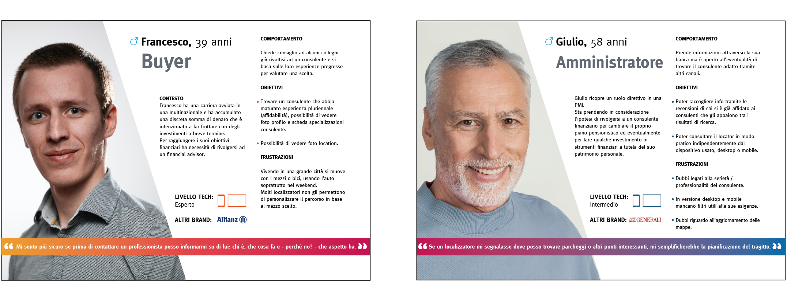

BANCA*** | Localizzatore
Società leader nel settore finanziario, offre prodotti e servizi di pianificazione e gestione finanziaria e patrimoniale nel mercato italiano.
Obiettivo: Permettere all'utente di trovare un consulente finanziario tramite uno strumento di geolocalizzazione integrato nel sito.
Ruolo in agenzia: UX e UI designer. Ho coperto tutte le fasi progettuali, stabilendo le metodologie da attuare. Nel team anche il project manager e gli sviluppatori.
Durata: 2 mesi.
BENCHMARKING
Sono state prese in esame 13 aziende che offrono all’interno del proprio sito web uno strumento di geolocalizzazione.
Identificati 3 tipi di competitor:
- COMPETITOR DIRETTI: Banche e società che offrono prodotti / servizi finanziari nel mercato italiano e si rivolgono allo stesso target di Zurich Bank.
- COMPETITOR INDIRETTI: Compagnie che propongono un prodotto diverso, ma che soddisfa la stessa esigenza del target di riferimento.
- COMPARABILI: Aziende che, in contesti diversi, hanno affrontato un problema analogo, poichè eventuali soluzioni di successo potrebbero essere sfruttate, adattandole alle esigenze specifiche.
Metodi di Analisi
- COMPARAZIONE DELLE FEATURE
Nei competitor diretti e indiretti, per confrontare funzionalità esistenti e mancanti.
- CTA E NUMERO DI CLICK PER ATTERRARE NEL LOCATOR
Nei competitor diretti, versione desktop e mobile.
- TASK ANALYSIS PER TROVARE UN CONSULENTE O AGENZIA ALL'INTERNO DEL LOCATOR
Nei competitor diretti.
- NUMERO DI CLICK PER TROVARE UN ELEMENTO SPECIFICO (CONSULENTE, AGENZIA, RIVENDITORE) NEL LOCATOR
Nelle tre tipologie di competitor.
- ELEMENTI UI
Nelle tre tipologie di competitor.
Altri aspetti approfonditi
- Il locator come touchpoint per generare lead
- UX best practice nella progettazione di un locator
- Le best practice di Google Maps
QUALCHE DATO RACCOLTO DALL'ANALISI
- Molti competitor richiedono più di 3 click per atterrare al geolocalizzatore.
- Solo alcuni offrono una mappa interattiva a tutta larghezza.
- Alcuni mostrano il numero di risultati di ricerca.
- In molti competitor, le schede profilo dei consulenti non supportano la click-to-call.
RICERCA UTENTE
Le informazioni raccolte in fase di briefing sul target focus hanno
delineato le caratteristiche degli utenti da coinvolgere nella ricerca.
Dati da raccogliere:
- In base a quali criteri l’utente sceglie un consulente finanziario
- Quali caratteristiche ha il geolocalizzatore che usa con più frequenza
- Cosa migliorerebbe del geolocalizzatore che usa abitualmente
- Quale device usa maggiormente per consultare un geolocalizzatore
Metodo di ricerca e parametri di selezione
È stata condotta una ricerca di tipo quantitativo al fine di raccogliere dati statistici e trarre conclusioni riguardo al comportamento generale degli utenti. Questionario con screening iniziale e domande a risposta multipla e aperta rivolto a un panel che rientrasse in parametri stabiliti:
- Nazione
- Fascia d'età
- Fasce di reddito
- Metodo di Trading
- Tipi di prodotti finanziari
Il numero di rispondenti richiesti era 100, il questionario è stato completato da 120 utenti.
ALCUNI DATI RACCOLTI
Il 36% degli utenti si appoggia ad un competitor preciso per la
pianificazione e gestione patrimoniale.
Per il 40% la ricerca di un consulente finanziario
avviene chiedendo informazioni alla propria banca.
Il 75% sceglie Google Maps anche se il sito che sta
consultando è dotato di locator e il 90% lo usa come geolocalizzatore abituale.
Il 90% ritiene il locator che usa più spesso migliore degli altri per la sua interfaccia semplice e facile da usare.
L' 88% dei rispondenti considera importante visualizzare le foto delle location durante la ricerca di un indirizzo tramite locator.
Invece il 55% ritiene più importante la presenza di una scheda profilo del consulente piuttosto che la sua foto.
L’aspetto più difficile dell’usare un locator è causato per il 37% degli utenti dalla mancanza di filtri che considera utili.
Invece per il 74% l’aspetto più difficile nell’usarlo in versione mobile è lo schermo piccolo.
2 PERSONAS
USER JOURNEY
Stato attuale e stato futuro
Ogni gruppo target (Personas) è mosso da motivazioni e obiettivi diversi, quindi ognuno genera almeno un viaggio utente. È stato costruito un primo user journey sulla base dei dati raccolti e sono emerse opportunità che hanno portato al disegno di un secondo journey con il miglioramento dell'esperienza utente all'interno del locator.

FLUSSO UTENTE
Versione desktop e mobile
Definizione dei flussi che le Personas seguiranno nel localizzatore per raggiungere un obiettivo specifico.

WIREFRAMING
Sono stati disegnati dei wireframe interattivi.

UI KIT
Il cliente disponeva di un design system che è stato ampliato con nuovi componenti UI.